Vikings everywhere! Well, dead ones at least. Ribe houses one of the better (if not the best) Viking museums in Denmark. Also the site of many floods, beheadings and other tragedies. The residents are required to live in Ribe full-time -- they can't simply live there as summer residents as in other towns of Denmark. Amazing baked goods abound around each corner.
Ribe is the oldest town in all of Denmark, and in fact in all of Scandinavia, which would explain it's extensive tourist industry, quaint atmosphere and wonderful viking museum.
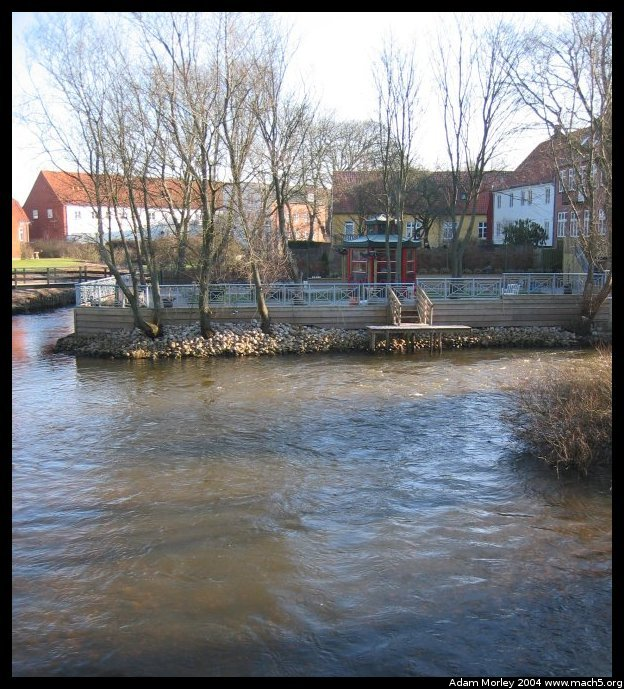
The river through Ribe.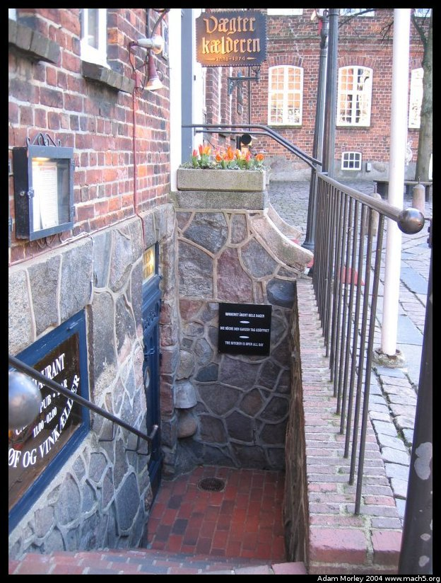
A local restaurant, clearly for tourists. The sign is in Danish, German, and English. It took me a minute to realize there was English in addition to Danish --- I'd already read the Danish and then realized there was German. Then there was English too. How handy.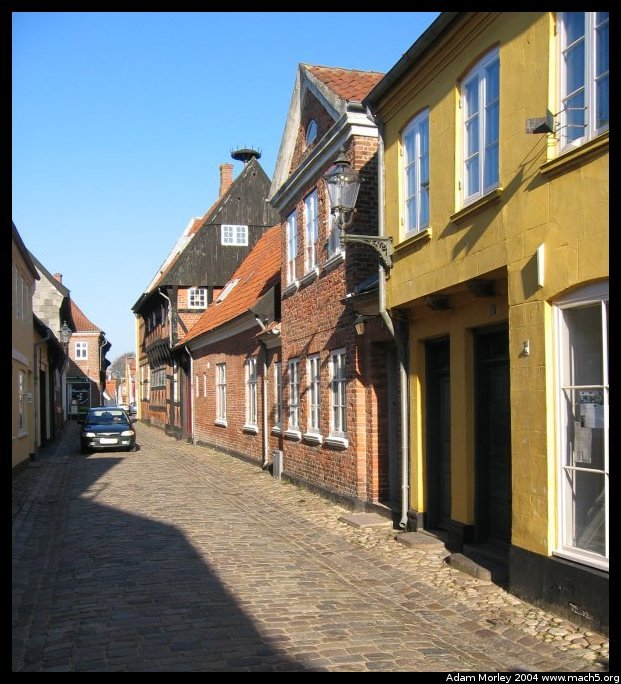
Yes, that is a half timbered house in the distance. Note the cobblestone streets.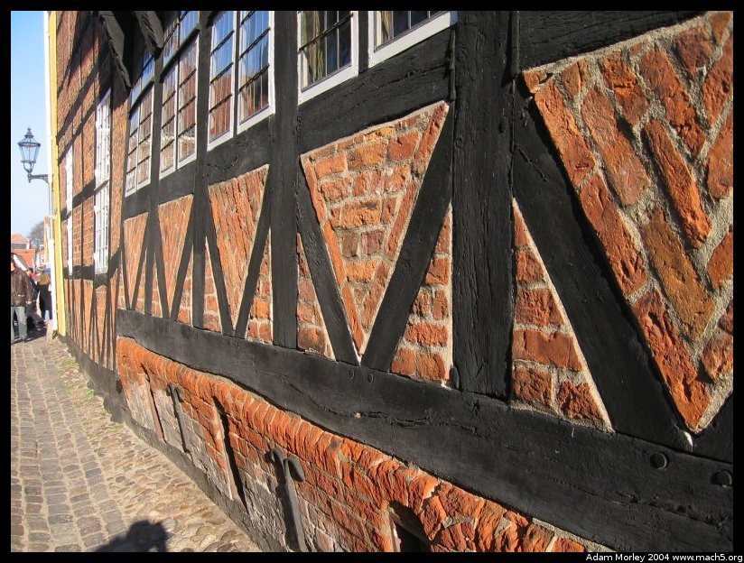
Up close to the half-timbered house. I was attempting to take a picture of how the house is actually compressing under it's own weight. Hint: look at the bottom of the house!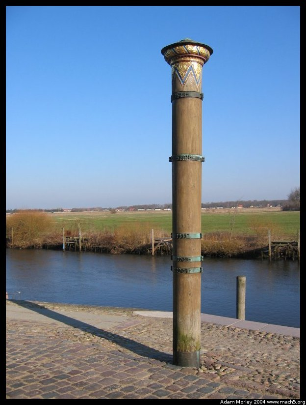
This is the famous "flood pole." The metal rings show where the flood waters rose to over the years. The top rung is, if I remember correctly, the level in a 17th century flood. Ribe is below sea-level, and is protected (as is much of south-western Denmark) from the water by dikes. Now days, the floods are effectively under control, but in years past they were clearly not! Please note that this pole is more like three meters (tenish feet) than it is two meters!See the field behind the pole? Many years ago, that is where criminals would be, well, dealt with.
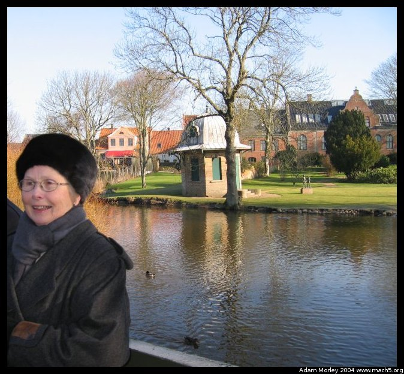
Our friendly tour guide in Ribe. As usual, smashing good English and of that perfect age where people just get, well, cute. You know, those older folks who aren't afraid (or just don't care anymore) to act like themselves.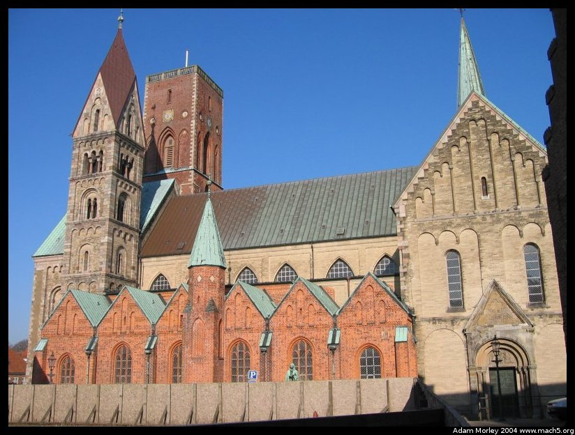
The cathedral in Ribe. Built in stages, it houses yet another high tower we went up into. Needless to say, it once again proves that Denmark is one very, very flat country. As I write this (at my parents house in the Seattle area), I am higher than the top of the highest hill in Denmark. This, obviously, makes bikes quite pleasant to ride. Though, for some reason, I never rode a bike in Denmark. I always just rode the bus.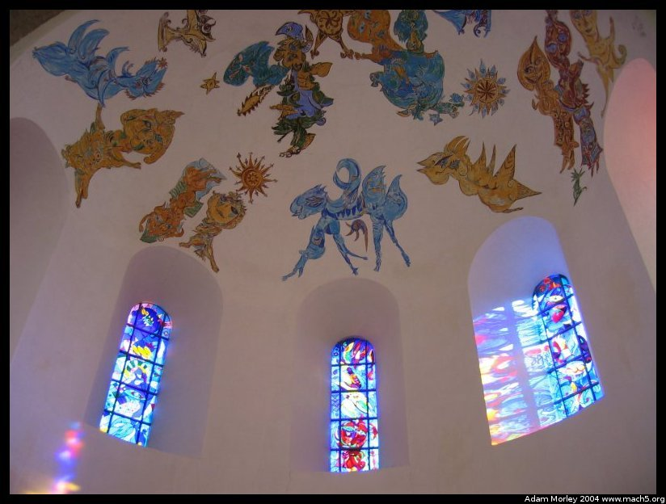
This church even has modern additions --- stained glass and ceiling murals.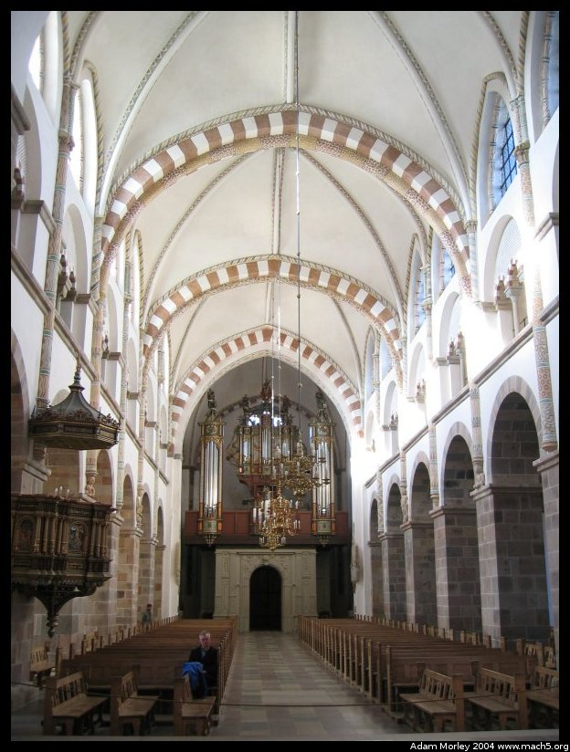
It is, however, still traditional in the rest of the building. And quite a bit more showy than other Danish churches.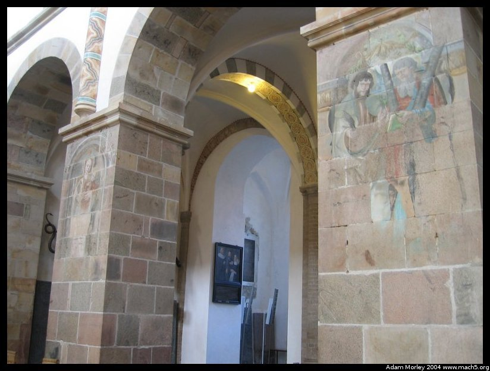
But much of the original murals remain on the columns.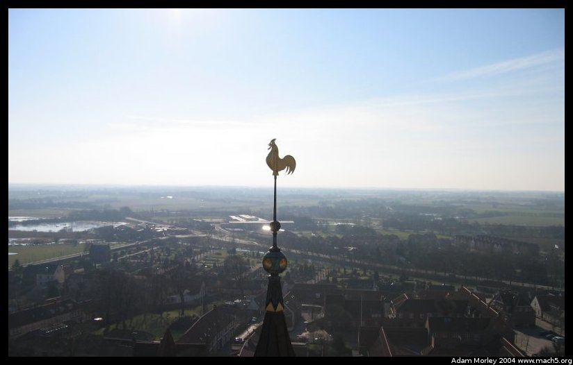
It really is flat. I'm not kidding.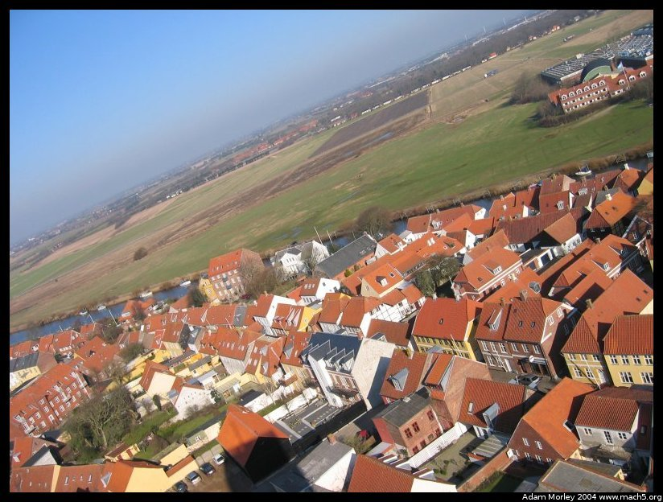
But you can make it look hilly. Or just weird.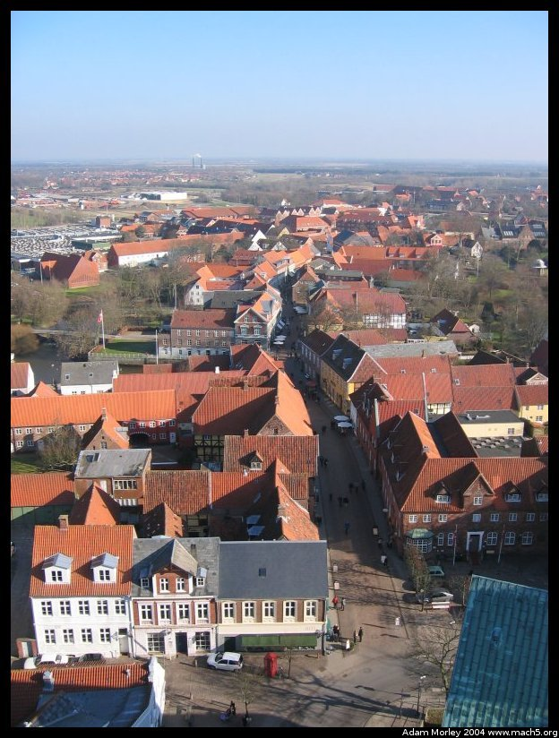
And there is a wonderful bakery down this street. Chocolade boller from there are just, well, a type 2 diabetes problem waiting to happen. But so good!Adam can be reached at adam dot morley at gmail dot com